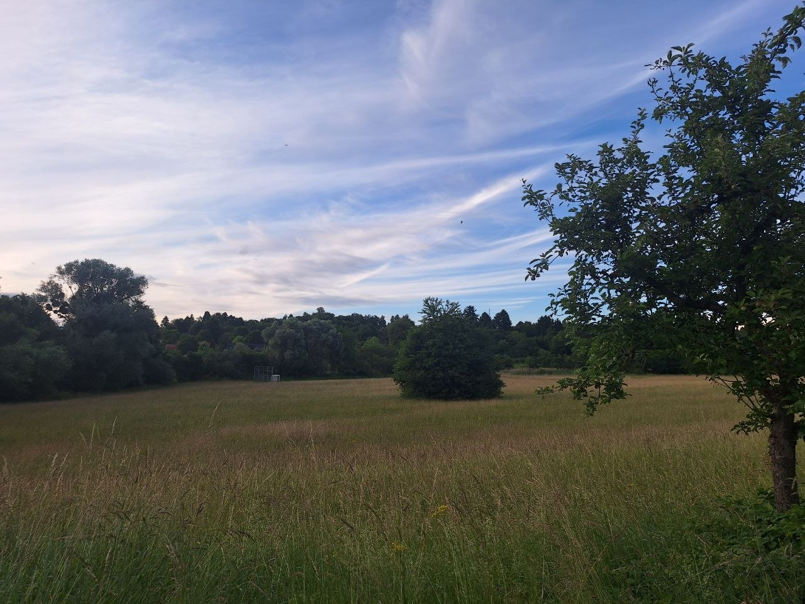

Nature is the most beautiful thing in the world. if you want to see the beauty of nature, you should go to the mountains, the beach, or the forest. Nature is also very important for our survival. It provides us with food, water, and air to breathe. We should take care of nature and protect it from pollution and destruction. Go outside, enjoy the beauty of nature, and appreciate all that it has to offer. u actually dont have to go to the mountains, the beach, or the forest to see the beauty of nature. You can just go ouside and look around you.
